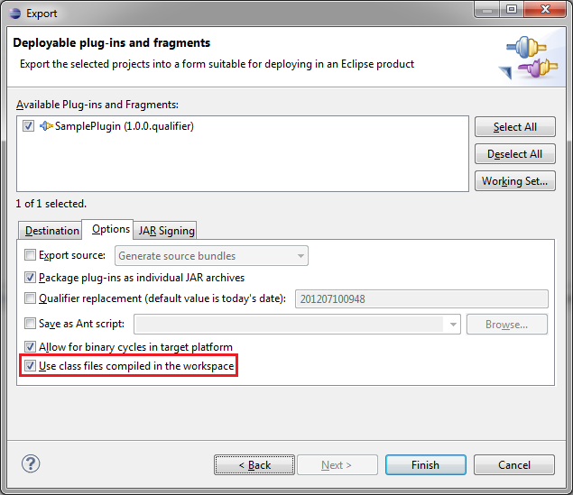
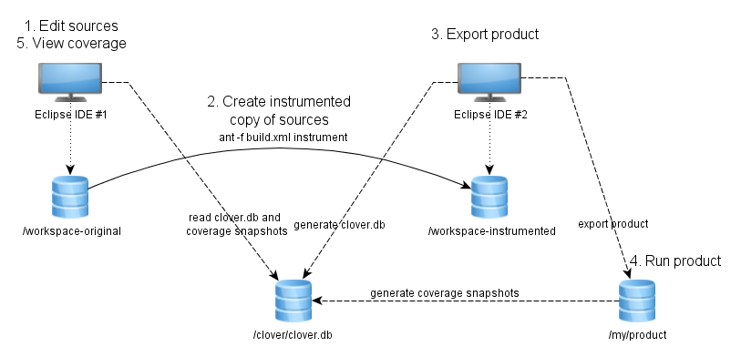

Running application inside Eclipse IDE (with Clover)
Instrumenting code
Just right click on projects you wish to instrument and choose "Clover > Enable on this project" option. Clover will:
- add "Clover Pre-Java Builder" and "Clover Post-Java Builder" on Builders tab (in project properties); typically it looks like this:
- add CLOVER_RUNTIME variable on "Java Build Path / Libraries" tab
- rebuild project
Your project must use a Java Builder in order to be instrumented by Clover. If you're using other builders for compilation (like Ant Builder) instead of Java Builder, your code won't be instrumented.
In such case, instrument sources manually before building them - for example by adding <clover-instr/> or <clover-setup/> to your Ant's build.xml. See example in Appendix 1.
Note that having PDE builders like Plug-in Manifest Builder / Extension Point Schema Builder in addition to Java Builder is OK, as they are just packaging compiled classes.
Running product
In order to run instrumented code you have to use "Run with Clover as..." button from tool bar. It will add Clover jar to -Xbootclasspath.
Alternatively, if you wish to use "Run as..." (or other action like Debug, Profile) to run instrumented application, define -Xbootclasspath/a:/your/path/to/clover-runtime.jar in VM Arguments box as presented below:
You can find clover-runtime.jar in <eclipse_dir>\plugins\com.atlassian.clover.eclipse.runtime_4.X.X.vYYYYMMDD000000\clover-runtime.jar.
(Usage of other clover*.jar files is discouraged, because they can have different content, build time stamp or instrumentation database version).
Running application in another Eclipse
This chapter describes a case, when code is instrumented in one Eclipse IDE and next features/plugins are exported, installed and tested in another Eclipse installation .
This is more tricky, because you have to ensure that instrumented classes will be packaged into jar files. You also have to change location of clover.db.
Glossary
Eclipse Test - instance where application is executed (typically, it's a pure Eclipse installation used for testing)
Eclipse IDE - instance where application is compiled, it has Clover plug-in installed
Instrumenting code
Run Eclipse IDE. Open Project Properties > Clover. Check the "Enable Clover in this project" box. On the "Instrumentation" tab in "Initstring" box:
- select the "Custom value" radio button,
- enter absolute path for Clover database
- deselect the "Relative to project dir" toggle.
Click OK and rebuild the project.
Exporting Plug-ins or Plug-in fragments
Right click on plug-in project, choose "Export ..." > "Plug-in Development" / "Deployable plug-ins and fragments". On "Options" tab make sure that the "Use class files compiled in the workspace" checkbox is selected.

Exporting Features
Right click on feature project, choose "Export ..." > "Plug-in Development" / "Deployable features". On "Options" tab make sure that the "Use class files compiled in the workspace" checkbox is selected.
Running plug-ins and features
Now, you can install these features or plug-ins into the Eclipse Test. Make sure that the clover-runtime.jar (you can find it in <eclipse>\plugins\com.atlassian.clover.eclipse.runtime_version_number) is available in Java -Xbootclasspath.
Add this to your Eclipse Test eclipse.ini file, for example:
-vmargs -Xbootclasspath/a:/path/to/eclipse-ide/plugins/com.atlassian.clover.eclipse.runtime_4.0.0.v20140711000000/clover-runtime.jar
 Note that
-vmargs is
necessary because all arguments listed after -vmargs are being passed as arguments for JVM,
instead of arguments for Eclipse framework.
Note that
-vmargs is
necessary because all arguments listed after -vmargs are being passed as arguments for JVM,
instead of arguments for Eclipse framework.
Generating report
As during instrumentation the absolute path was used for Clover database, your Eclipse IDE should automatically fetch coverage files so that you can see results in Coverage Explorer.
You can also generate report manually, using <clover-report> Ant task for instance. See the "report" target in Appendix 1.
Running product outside Eclipse
Exporting Product
Unfortunately, exporting the whole product at once:
- right click on project, choose "Export ..." > "Plug-in Development / Eclipse Product" or
- open the MyProudct.product file and click "Use the Eclipse Product export wizard" from Overview tab.
will not work because the standard "Eclipse Product Export Wizard" does not use Builders defined in project properties, but calls PDE Ant build scripts. As a consequence it bypasses the "Clover Pre/Post-Java Builder".
There are two ways to solve this:
Approach #1: Instrument source code manually
1) Use CloverInstr command line tool or clover-instr Ant task to instrument sources manually - see script in Appendix 1
 remember to put instrumented sources in another
location, i.e. not into your original source folder
remember to put instrumented sources in another
location, i.e. not into your original source folder

2) Open instrumented sources in
Eclipse IDE.
Add the clover-runtime.jar from <eclipse_home>\plugins\com.atlassian.clover.eclipse.runtime_<version_number> as external JAR to Java Build Path.
 Do not add it as
dependency in MANIFEST.MF as there's no reason to package this jar inside your product - it's only
for compilation. At runtime, the -Xbootclasspath will be used.
Do not add it as
dependency in MANIFEST.MF as there's no reason to package this jar inside your product - it's only
for compilation. At runtime, the -Xbootclasspath will be used.
Run Eclipse Product Export Wizard.
Approach #2: Overwrite product's plugins by instrumented versions
1) Manually export all plugins being part of your product - see Exporting Plug-ins or Plug-in fragments (they will contain instrumented classes).
2) Export product using "Eclipse Product Export Wizard" into some folder (it will contain un-instrumented classes).
3) Overwrite plugins in the exported product folder by those exported manually.
 This is less convenient compared to Approach
#1 as you have to export plugins one-by-one, but might be needed if:
This is less convenient compared to Approach
#1 as you have to export plugins one-by-one, but might be needed if:
- you have sources generated during build (XML schema bindings, for instance) and
- you want to have them instrumented as well (which is usually not practised).
Running product
Make sure that the clover-runtime.jar (you can find it in <eclipse>\plugins\com.atlassian.clover.eclipse.runtime_<version_number>) is available in Java -Xbootclasspath. Add this to your product's config.ini file, for example:
-vmargs -Xbootclasspath/a:/path/to/eclipse-ide/plugins/com.atlassian.clover.eclipse.runtime_4.0.0.v20140711000000/clover-runtime.jar
 Note that
-vmargs is
necessary because all arguments listed after -vmargs are being passed as arguments for JVM,
instead of arguments for Eclipse framework.
Note that
-vmargs is
necessary because all arguments listed after -vmargs are being passed as arguments for JVM,
instead of arguments for Eclipse framework.
Generating report
As during instrumentation the absolute path was used for Clover database, your Eclipse IDE should automatically fetch coverage files so that you can see results in Coverage Explorer.
You can also generate it manually e.g. using <clover-report> Ant task. See the "report" target in Appendix 1.
Sample workbench configuration
The diagram below shows how work with manually instrumented sources (Approach #1) can be organized. A location of Clover database configured in Eclipse IDE as well as in Ant script which instruments sources is the same and points to an absolute path. Thanks to this, after running product, coverage results can be fetched automatically into Eclipse IDE #1.

Appendix 1
Sample Ant script which instruments all *.java files from project.original.dir and puts them into project.instrumented.dir, preserving original directory structure. It copies also all non-java files as well.
<project default="instrument">
<property name="clover.jar" location="${user.home}/clover.jar"/>
<property name="ant-contrib.jar" location="${user.home}/ant-contrib-1.0b3.jar"/>
<property name="project.original.dir" location="original_project"/>
<property name="project.instrumented.dir" location="instr_project"/>
<property name="project.clover.db" location="${project.instrumented.dir}/.clover/clover.db"/>
<taskdef resource="cloverlib.xml" classpath="${clover.jar}"/>
<taskdef resource="net/sf/antcontrib/antlib.xml" classpath="${ant-contrib.jar}"/>
<target name="_instrument-dir">
<!-- Use double-slash for windows paths -->
<propertyregex property="original.dir.quoted" input="${project.original.dir}" regexp="\\" replace="\\\\\\\\" global="true"/>
<propertyregex property="relative.dir" input="${source.dir}" regexp="${original.dir.quoted}(.*)" select="\1"/>
<echo message="Instrumenting ${source.dir} into ${project.instrumented.dir}${relative.dir}"/>
<echo message="Clover database is ${project.clover.db}"/>
<clover-instr destdir="${project.instrumented.dir}${relative.dir}" initstring="${project.clover.db}">
<fileset dir="${project.original.dir}${relative.dir}">
<include name="**/*.java"/>
</fileset>
</clover-instr>
</target>
<target name="instrument">
<!-- Cleanup from previous run -->
<delete dir="${project.instrumented.dir}"/>
<!-- Find all source directories, for each of them call clover-instr. Please note that we cannot use sth like:
<clover-instr srcdir="${project.original.dir}" destdir="${project.instrumented.dir}" initstring="${project.clover.db}">
directly, because clover-instr does not recreate original directory structure, but puts everything
under one destdir root.
-->
<foreach target="_instrument-dir" param="source.dir" inheritall="true" inheritrefs="true">
<path>
<!-- Define all package roots here -->
<dirset dir="${project.original.dir}">
<include name="**/src"/>
<include name="**/test"/>
</dirset>
</path>
</foreach>
<!-- Copy all other non-java files as well -->
<echo message="Copying other files from ${project.original.dir} to ${project.instrumented.dir}"/>
<copy todir="${project.instrumented.dir}">
<fileset dir="${project.original.dir}">
<exclude name="**/*.java"/>
</fileset>
</copy>
<!-- Now we can build it under PDE. Don't even try to read instrumented sources ;-) -->
<echo message="INSTRUMENTATION DONE. Run Eclipse and open project from ${project.instrumented.dir}"/>
</target>
<target name="report">
<clover-report initstring="${project.clover.db}">
<current outfile="current.html">
<format type="html"/>
</current>
<current outfile="current.xml">
<format type="xml"/>
</current>
</clover-report>
</target>
</project>